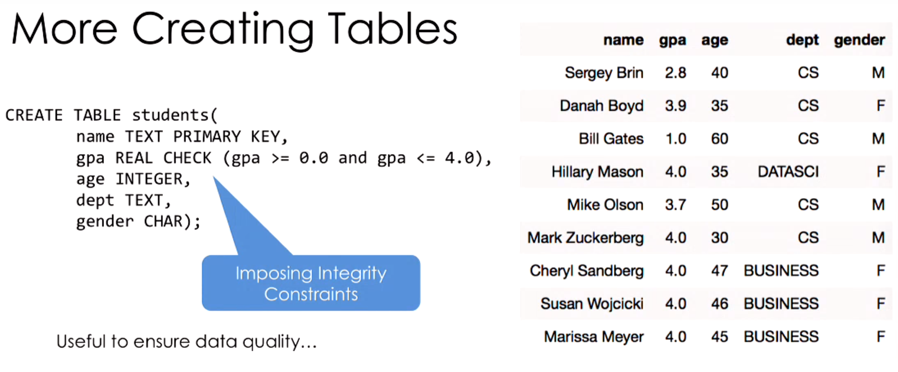
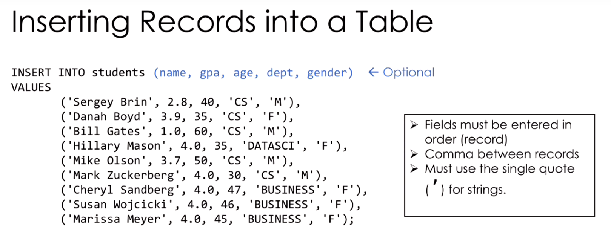

Lecture Notes11

Lecture Notes 11
REST - Representational State Transfer
A way of architecting widely accessible, efficient, and extensible web service (typically using HTTP).
Here are the following properties of REST
- Cilent-Server: Client and server operate and evolve independently.
- Stateless: Server do not store the state of the client thus the any sequential request must be handled by the client.
- Cacheable: There exist client-server rules on what things are cacheable.
- Uniform Interface: Provide a consistent interface for getting and updating data in a system.
You will be using the REST API for Twitter in project 1.
Databases
A database is an organized collection of data. In this class we will be using a database management system (DBMS).
A DBMS has the following properties:
- Stores data
- Organizes the data and manages data properties (e.g., type)
- Facilitates access
The type of DBMS often used are called relatoinal DBMS where the data are not stored as one would think (a table of row and column) but instead in a data structure in some sort of relation (e.g., tree, heap) that are hidden away from the user interface. In the end relational models are a table system.
Structured Query Language (SQL)
“What we want to compute not how we want to compute it”
SQL (pronounced like “sequel” not “S-Q-L”) is a declarative language (see quote above).
Here are some vocabulary to know:
- Relations
- Table
- Attribute
- Column
- Tuple
- Record or row
- Schema
- description of columns, their types, and constraints
- Schema of the Database
- a set of schemas of its relations
- Instance
- data satisfying the schema
SQL Types
- CHAR(size): Fixed number of characters
- TEXT: Arbitrary number of character strings
- INTEGER & BIGINT: Integer of various sizes
- REAL & DOUBLE PRECISION: Floating point numbers
- DATE & DATETIME: Date and Date+Time formats
Create Table

Inserting Records
Inserting records is writing data into a table

Modifying Records
Delete an entry
Change an entry
Querying Records
The basic structure of a single table query is:
SELECT [DISTINCT] <column expression list>
FROM <single table>
[WHERE <predicate>]
[GROUPBY <column list>]
[HAVING <predicate>]
[ORDER BY <column list>]
[LIMIT <integer>]Thing in square brackets [] are optional and angle brackets <> are placeholders.
Python and SQL
SQLite
Python has many tools to operator with SQL. Python can create its own database with pySQLite (sqlite)or SQLite for short. SQLite is a very basic DBMS where one may create a local database stored in a .db file and execute SQL queries.
SQLAlchemy
A really powerful DBMS for python is SQLAlchemy (sqlalchemy) which supports database created by SQLite. What SQLAlchemy provide is all the functionality of SQLite with object oriented method of handling database. This method is called Object Relational Mapper (ORM) which treats the relations inside a database as class and objects
SQLALchemy is so powerful they cannot write a simpler (pythonic) documentation. See docs.
Pandas and SQL
Pandas has built to handle SQL including SQLite database.